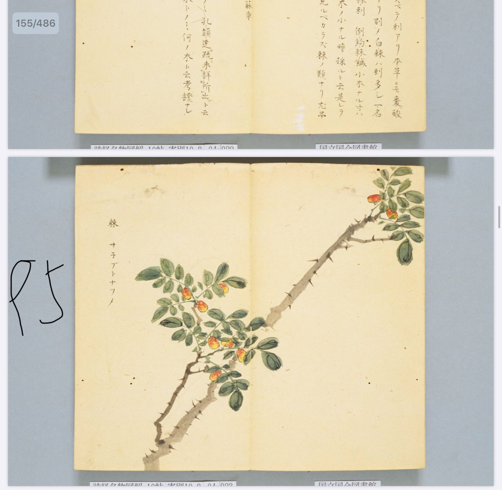
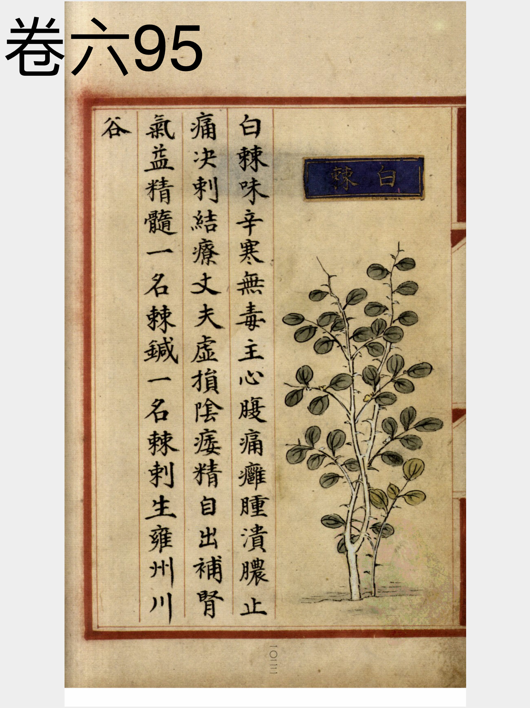
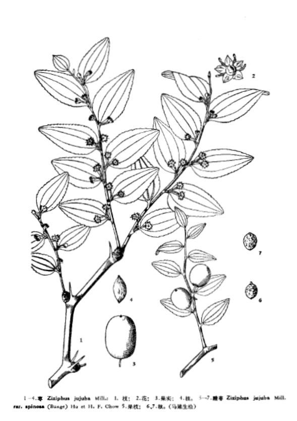
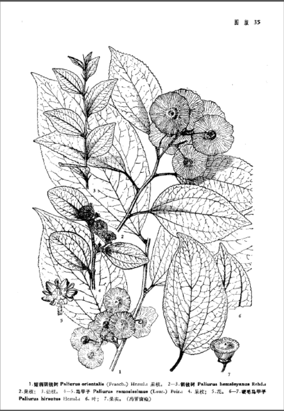

出现篇目
当代记载 《中国植物志》
酸枣 （Ziziphus jujuba var. spinosa）， 鼠李科，枣属植物。本变种常为灌木，叶较小，核果小，近球形或短矩圆形，具薄的中果皮，味酸，核两端钝。花期6-7月，果期8-9月。
辽宁、内蒙古、河北、山东、山西、河南、陕西、甘肃、宁夏、新疆、江苏、安徽等。常生于向阳、干燥山坡、丘陵、岗地或平原。

<细井徇>

<补遗雷公炮制便览>

<中国植物志>

<中国植物志>